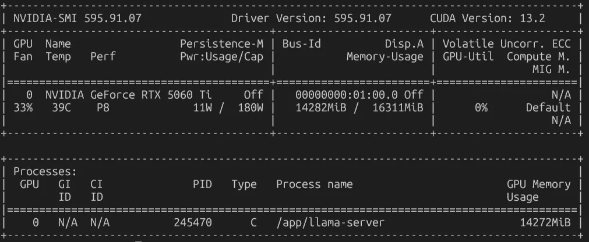
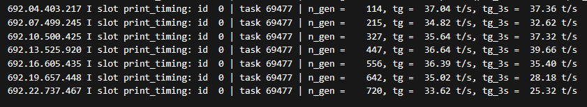

IA local para datos clínicos en un servidor de bajo presupuesto
Montamos un sistema de IA local para nuestro propio equipo, que usamos a diario para trabajar con datos clínicos sin que salgan del edificio: un servidor de ≈1.200 € con GPU RTX 5060 Ti de 16 GB, modelo Qwen 27B a 30 tokens/s de media, con registro de peticiones y acceso por API desde nuestras herramientas.
Hablemos de tu proyectoDe un vistazo
- Antes
Sin IA disponible para datos clínicos
Los datos clínicos no podían salir del edificio, así que no era posible apoyarse en servicios de IA en la nube para las tareas de desarrollo.
- Ahora
IA local en un servidor propio
Un servidor de ≈1.200 € con GPU de 16 GB, dentro de la red interna, que ejecuta Qwen 27B a 30 tokens/s de media con registro de cada petición.
- Resultado
- 30 tokens/s de mediacon un modelo open weight de 27B (Qwen, denso)
- ≈1.200 €presupuesto de todo el servidor
- 100 %del dato clínico permanece dentro del edificio
- Registro y API localpeticiones con log y acceso desde Copilot, Opencode y chat interno
Contexto
Nuestro equipo necesitaba usar IA en tareas de desarrollo con datos clínicos que no podían enviarse a servicios en la nube.
Montamos el sistema sobre un servidor de ≈1.200 €: GPU RTX 5060 Ti de 16 GB, Qwen 27B a 30 tokens/s de media y registro de cada petición.
Problema
Las tareas de desarrollo trabajaban con datos clínicos que no podían salir del edificio: enviarlos a un servicio de IA en la nube no era una opción viable.
Además, la solución tenía que caber en ≈1.200 € y, aun así, ejecutar un modelo de 27B con registro de uso y servicio disponible en la red interna.
Solución
Montamos el sistema en un servidor propio. El trabajo incluyó:
- Montaje de un servidor con GPU NVIDIA RTX Geforce 5060 Ti de 16 GB de VRAM, por ≈1.200 € en total.
- Despliegue de Qwen 27B (denso, open weight) a 30 tokens por segundo de media.
- Registro de peticiones y control de acceso en la red interna, con el modelo expuesto por API.
- Conexión a nuestras herramientas de trabajo: GitHub Copilot, Opencode, agentes y chatbots, que consumen el modelo local a través de la API del servidor.
- Puesta en servicio para tareas de desarrollo donde el dato no puede salir del edificio.


Pruébalo aquí mismo
Así escribe el servidor: 30 tokens por segundo de media
Pulsa el botón y verás generarse una respuesta de ejemplo a la velocidad real medida en el servidor. La simulación corre entera en tu navegador.
Es el tipo de trabajo que hacemos en IA privada y automatización.
Si llevas esto al hospital, hay una guía práctica: IA privada en hospitales
Cómo viaja una petición
Del clic al token, sin que el dato salga del edificio: pulsa «Enviar petición» y mira cómo la solicitud atraviesa cada capa del stack. Toca cualquier nodo para ver qué hace.
Esquema interactivo del stack
Exterior → proxy SSL → proxy de control → IA local
Una petición HTTPS entra por el proxy SSL, el segundo proxy comprueba la lista de acceso, guarda el log y enruta al servidor de IA local.
Listo: pulsa «Enviar petición» o toca cualquier nodo del esquema.
3Proxy de control: access list, logs y enrutado
El cerebro del stack. Comprueba si tu IP o token está en la lista de acceso, escribe una línea de log con fecha, origen, modelo y tokens, y solo entonces reenvía al servidor de IA. Si no estás en la lista, responde 403 y lo deja registrado.
- allowlist IP / token
- log de cada petición
- routing a servidor-ia:8000
- --:--:--proxy listo · esperando peticiones…
Ejemplos ficticios con el formato real que guarda el proxy: hora, origen, modelo y tokens de cada petición. El coste siempre es 0 €: todo corre en local.
Resultados
Trabajamos en tareas de desarrollo con datos clínicos que no salen nunca del edificio: la IA corre en un servidor propio, con Qwen 27B que responde a 30 tokens por segundo de media.
Cada petición queda registrada, el acceso queda limitado a la red interna y todo el hardware cuesta ≈1.200 €.
Otros casos de éxito
¿Tus datos no pueden salir fuera?
Cuéntanos qué requisito de datos tienes y miramos si un sistema en tu propia infraestructura lo resuelve.